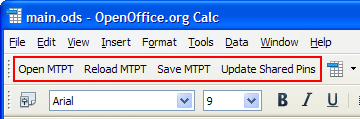

OpenOffice spreadsheet for editing the CSV files
Each MTPT directory created by STPM MCM includes an OpenOffice spreadsheet (.ods) that lets you edit the CSV files containing the test program mapping information.
The spreadsheet contains custom controls to allow you to load and save the CSV files.
Controls

STPM MCM adds controls to the upper left corner of the spreadsheet (see graphic above):
- Open MTPT: Clicking this button lets you load a set of CSV
files.
Select the desired MTPT configuration file (with a .mtpt filename extension) in the Open dialog; the spreadsheet loads the CSV files belonging to it.
- Reload MTPT: Clicking this button reloads the information from the
last loaded set of CSV files.
Note that this overwrites any unsaved changes you may have made in OpenOffice.
- Save MTPT: Clicking this button saves the current state of the spreadsheets to the corresponding CSV files.
- Update Shared Pins: Clicking this button creates one entry in the Shared pins table for each shared pin specified in the Pin mapping table. All entries created by clicking this button have default values.
Sheets
Each sheet in the OpenOffice document contains one of the imported CSV tables described in MTPT (STPM MCM mapping tables).
Columns
For descriptions of the table columns, see the documentation of the CSV file containing the column in MTPT (STPM MCM mapping tables). In the spreadsheet, columns with a light blue title cell contain data related to the STPs and columns with a medium blue title cell contain data related to the MTP.
Several of the columns have drop-down lists from which you can choose appropriate values:
- STP table
- Apply Prefix On Pin Config
- Keep Unused Data
- Pin mapping table
- MTP Pin Attribute
- Test mapping table
- Mode
- Test suite table
- STP
- Test Flags
- Bin mapping table
- STP
- Type
- Color
- Reprobe
- Overon
- Test number mapping table
- STP
- Testflow variable mapping table
- STP
- Type
- Special tests table
- Type
- Test flag table
- All columns representing individual flags
Functional changes
- Introduced in SmarTest 7.1.4